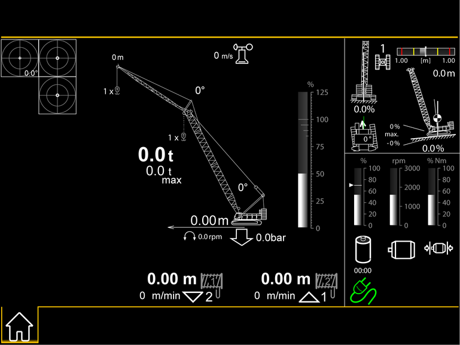

Betriebsart Hebezeug


Fig. 1678: Bildschirmseite Betrieb (Fahren auf Geländeneigungen)
Fig. 1678: Bildschirmseite Betrieb (Fahren auf Geländeneigungen)
Beim Fahren auf Geländeneigungen werden durch Betätigen des Fahrwerks zusätzliche Anzeigen am Bildschirm eingeblendet.
Wenn ausreichend Platz vorhanden ist, wird die Anzeige Neigung der Maschine in doppelter Größe angezeigt.
Montagepositionen des Vertical Line Finders* | ||
|---|---|---|
Hauptausleger-Kopf und Spitzenausleger auf Hauptausleger-Kopf | Hauptausleger-Kopf | Spitzenausleger auf Hauptausleger-Kopf |
Hauptausleger-Kopf und Nadelausleger-Kopf | Hauptausleger-Kopf | Nadelausleger-Kopf |
Hauptausleger-Kopf und Spitzenausleger auf Nadelausleger-Kopf | Hauptausleger-Kopf | Spitzenausleger auf Nadelausleger-Kopf |
Nadelausleger-Kopf und Spitzenausleger auf Nadelausleger-Kopf | Nadelausleger-Kopf | Spitzenausleger auf Nadelausleger-Kopf |
Montagepositionen des Vertical Line Finders*
Anzeige Vertical Line Finder*
Vertical Line Finder ist montiert.
Anzeige Vertical Line Finder* (leuchtet grün)
Ausleger wird gesenkt.
Ausladung wird erhöht.
Anzeige Vertical Line Finder* (leuchtet grün)
Ausleger wird gehoben.
Ausladung wird verringert.
Anzeige Vertical Line Finder* (leuchtet grün)
Oberwagen wird nach links gedreht.
Anzeige Vertical Line Finder* (leuchtet grün)
Oberwagen wird nach rechts gedreht.
Anzeige Windgeschwindigkeit
Windgeschwindigkeit.
Anzeige Windgeschwindigkeit (leuchtet gelb)
Gewählte maximale Windgeschwindigkeit ist erreicht.
Anzeige Windgeschwindigkeit (blinkt rot)
Gewählte maximale Windgeschwindigkeit ist überschritten.
Anzeige Spurüberwachung (blinkt rot)
Schmale Spurbreite ist gewählt.
Breite Spurbreite ist aufgerüstet.
Anzeige Spurüberwachung (blinkt rot)
Breite Spurbreite ist gewählt.
Schmale Spurbreite ist aufgerüstet.
Anzeige Kippkantenüberwachung
Oberwagen ist in einem unzulässigem Drehwinkel für Aufrichten.
Anzeige Keine gültige Traglasttabelle vorhanden
Keine gültige Traglasttabelle ist für aktuelle Auslegerposition vorhanden.

Anzeige Lastmoment
Bei werkseitigen Einstellungen des Grenzwertes: Auslastung des Lastmoments.

Anzeige Lastmoment (leuchtet gelb)
Bei werkseitigen Einstellungen des Grenzwertes: Lastmoment ist über 90 % ausgelastet.

Anzeige Lastmoment (leuchtet rot)
Bei werkseitigen Einstellungen des Grenzwertes: Lastmoment ist über 100 % ausgelastet.
Anzeige Lastmoment
Bei manuell eingestelltem Grenzwert: Auslastung des Lastmoments.
Anzeige Lastmoment (leuchtet gelb)
Bei manuell eingestelltem Grenzwert: Lastmoment ist über eingestelltem Wert ausgelastet.
Anzeige Lastmoment (leuchtet rot)
Bei manuell eingestelltem Grenzwert: Lastmoment ist über eingestelltem Wert ausgelastet.
Die Bodendruckauslastung 2 zeigt den aktuellen Bodendruck im Verhältnis zum eingestellten maximal zulässigen Bodendruck an.
Der maximal auftretende Bodendruck 3 ist der maximale Bodendruck, der beim Drehen des Oberwagens um 360° auftritt.
Anzeige Bodendruck*
Maximaler Bodendruck ist nicht erreicht.
Anzeige Bodendruck* (leuchtet gelb)
Maximaler Bodendruck ist erreicht.
Anzeige Bodendruck* (leuchtet rot)
Maximaler Bodendruck ist überschritten.
Anzeige Schwerpunktlage
Horizontaler Abstand des Schwerpunkts zur Drehkranzmitte bei Montagefunktionen.
Anzeige Kippgefahr (leuchtet gelb)
Maximale Längsneigung oder maximale Querneigung ist erreicht.
Anzeige Kippgefahr (blinkt rot)
Maximale Längsneigung oder maximale Querneigung ist überschritten.
Anzeige Drehbereichseinschränkung
Drehbereichseinschränkung ist aktiv.
Oberwagen drehen ist gesperrt.
Anzeige Arbeitsbereichseinschränkung
Arbeitsbereichseinschränkung ist aktiv.
Anzeige Stopp der Arbeitsbereichseinschränkung
Stopp-Position der Arbeitsbereichseinschränkung ist über 5 m (16.4 ft) entfernt.
Anzeige Stopp der Arbeitsbereichseinschränkung (leuchtet gelb)
Stopp-Position der Arbeitsbereichseinschränkung ist unter 5 m (16.4 ft) entfernt.
Anzeige Stopp der Arbeitsbereichseinschränkung (leuchtet rot)
Stopp-Position der Arbeitsbereichseinschränkung ist erreicht.
Anzeige Geschwindigkeitsstufe des Fahrwerks
Geschwindigkeitsstufe 1 des Fahrwerks ist gewählt.
Anzeige Geschwindigkeitsstufe des Fahrwerks
Geschwindigkeitsstufe 2 des Fahrwerks ist gewählt.
Anzeige Geschwindigkeitsstufe des Fahrwerks
Geschwindigkeitsstufe 3 des Fahrwerks ist gewählt.
Anzeige Fahrwerk gesperrt
Geschwindigkeitsstufe 1 des Fahrwerks ist gesperrt.
Anzeige Fahrwerk gesperrt
Geschwindigkeitsstufe 2 des Fahrwerks ist gesperrt.
Anzeige Fahrwerk gesperrt
Geschwindigkeitsstufe 3 des Fahrwerks ist gesperrt.
Anzeige Obere Hubhöhenbegrenzung der Winde1
Obere Hubhöhenbegrenzung der Winde1 ist aktiv.
Last an Winde1 heben ist gesperrt.
Anzeige Untere Hubhöhenbegrenzung der Winde1
Untere Hubhöhenbegrenzung der Winde1 ist aktiv.
Last an Winde1 senken ist gesperrt.
Anzeige Obere Hubhöhenbegrenzung der Winde2
Obere Hubhöhenbegrenzung der Winde2 ist aktiv.
Last an Winde2 heben ist gesperrt.
Anzeige Untere Hubhöhenbegrenzung der Winde2
Untere Hubhöhenbegrenzung der Winde2 ist aktiv.
Last an Winde2 senken ist gesperrt.
Anzeige Mehrere Stopps
Allgemeine Begrenzung ist aktiv.
Ausladung verändernde Bewegungen sind gesperrt.
Anzeige Maximale Ausladungseinschränkung
Stopp-Position der maximalen Ausladungseinschränkung ist erreicht.
Hauptausleger senken ist gesperrt.
Nadelausleger senken ist gesperrt.
Anzeige Minimale Ausladungseinschränkung
Stopp-Position der minimalen Ausladungseinschränkung ist erreicht.
Hauptausleger heben ist gesperrt.
Nadelausleger heben ist gesperrt.
Anzeige Drehwinkel des Oberwagens
Drehwinkel des Oberwagens.
Anzeige Externe Steuerung
Externe Steuerung ist eingeschaltet.
Anzeige Externe Steuerung (leuchtet gelb)
Kommunikationsproblem zwischen externer Steuerung und Maschine.
Anzeige Drehwinkel des Oberwagens
Drehwinkel des Oberwagens.
Anzeige Drehwinkel des Oberwagens (leuchtet gelb)
Maximaler Drehwinkel des Oberwagens ist überschritten.
Anzeige Querneigung
Querneigung der Maschine.
Anzeige Querneigung (leuchtet gelb)
Maximale Querneigung ist überschritten.
Anzeige Geschwindigkeitsstufe des Fahrwerks
Geschwindigkeitsstufe 1 des Fahrwerks ist gewählt.
Anzeige Geschwindigkeitsstufe des Fahrwerks
Geschwindigkeitsstufe 2 des Fahrwerks ist gewählt.
Anzeige Geschwindigkeitsstufe des Fahrwerks
Geschwindigkeitsstufe 3 des Fahrwerks ist gewählt.
Anzeige Schwerpunktlage
Horizontaler Abstand des Schwerpunkts zur Drehkranzmitte bei Geländeneigungen.
Anzeige Schwerpunktlage (leuchtet gelb)
Horizontaler Abstand des Schwerpunkts zur Drehkranzmitte bei Geländeneigungen ist hoch.
Anzeige Schwerpunktlage (leuchtet rot)
Horizontaler Abstand des Schwerpunkts zur Drehkranzmitte bei Geländeneigungen ist zu hoch.
Schwerpunkt 3 der Maschine blinkt rot.
Anzeige Bewegungsrichtung (leuchtet grün)
Ausladung muss verringert werden.
Anzeige Bewegungsrichtung (leuchtet grün)
Ausladung muss erhöht werden.
Anzeige Hauptauslegerwinkel
Hauptausleger in Position des aktuellen Hauptauslegerwinkels der Maschine.
Anzeige Hauptauslegerwinkel (leuchtet gelb)
Maximaler Hauptauslegerwinkel ist überschritten.
Anzeige Längsneigung
Längsneigung der Maschine.
Anzeige Längsneigung (leuchtet gelb)
Maximale Längsneigung ist überschritten.
Anzeige Drehzahl des Elektromotors
Drehzahl des Elektromotors.
Anzeige Drehzahl des Elektromotors (leuchtet gelb)
Drehzahl des Elektromotors ist hoch.
Anzeige Drehzahl des Elektromotors (blinkt rot)
Drehzahl des Elektromotors ist zu hoch.
Anzeige Elektromotor-Start-Stopp-Automatik (leuchtet grün)
Elektromotor-Start-Stopp-Automatik ist eingeschaltet.
Elektromotor wurde durch die Elektromotor-Start-Stopp-Automatik ausgeschaltet.
Keine Verhinderung für das Einschalten des Elektromotors ist vorhanden.
Anzeige Elektromotor-Start-Stopp-Automatik (leuchtet grün)
Elektromotor-Start-Stopp-Automatik ist eingeschaltet.
Elektromotor wurde nicht durch die Elektromotor-Start-Stopp-Automatik ausgeschaltet.
Eine Verhinderung für das Ausschalten des Elektromotors ist vorhanden.
Anzeige Elektromotor-Start-Stopp-Automatik
Elektromotor-Start-Stopp-Automatik ist eingeschaltet.
Elektromotor ist ausgeschaltet.
Eine Verhinderung für das Einschalten des Elektromotors ist vorhanden.

Anzeige Batteriespannung (blinkt rot)
Batterie wird nicht geladen.

Anzeige Hydraulikölheizung (leuchtet grün)
Hydraulikölheizung ist eingeschaltet.
Anzeige Auslastung des Elektromotors
Auslastung des Elektromotors.
Anzeige Auslastung des Elektromotors
Auslastung des Elektromotors ist reduziert.
Anzeige Ladekabel
Ladekabel ist eingesteckt.
Anzeige Ladekabel (leuchtet grün)
Batterie wird geladen.